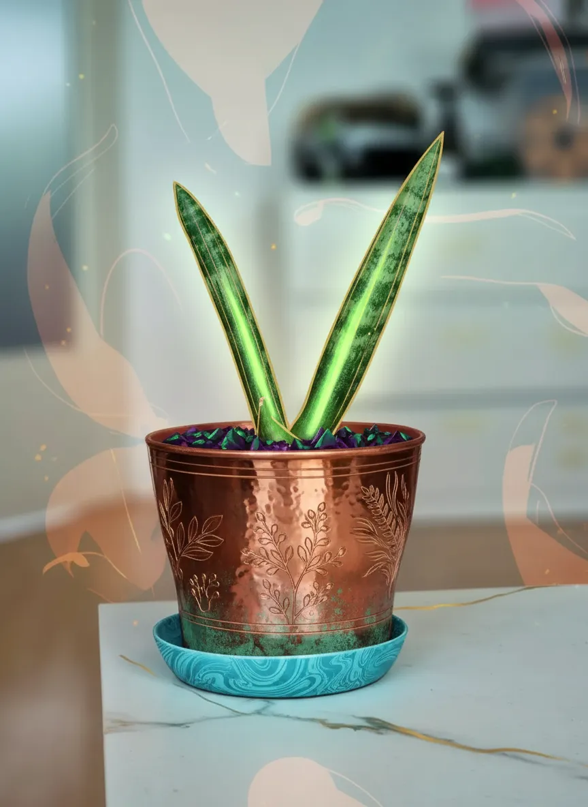
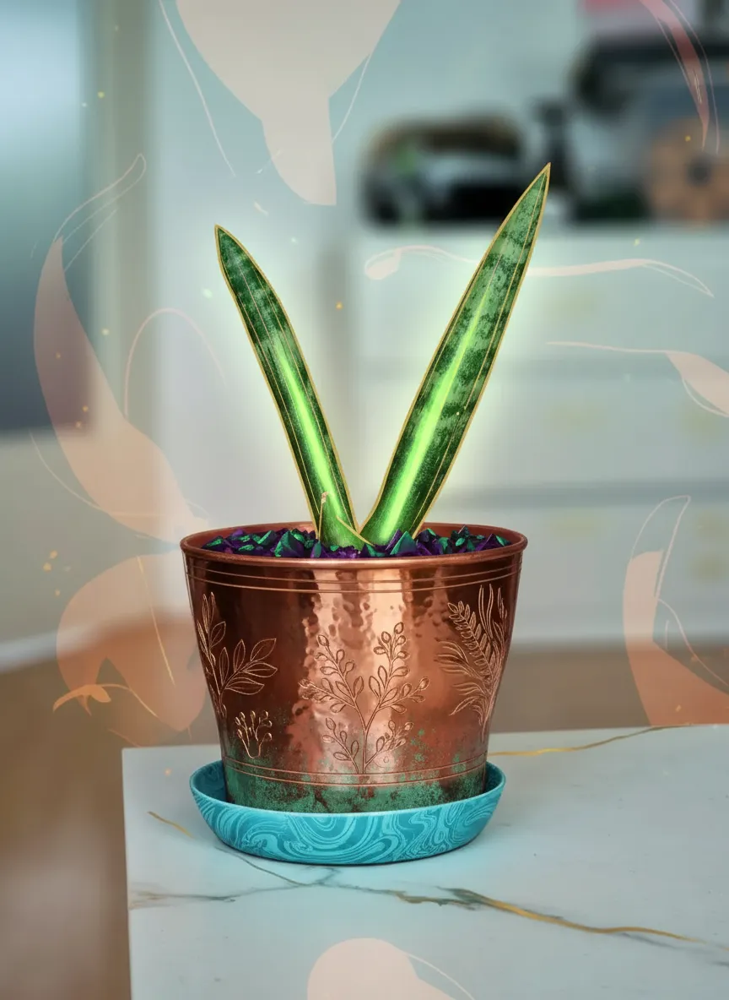

Dracaena angolensis

 

Plant Mood
Breaking News: This Dracaena angolensis, a.k.a. the 'African Spear,' has just been spotted attempting to communicate with an orbiting satellite. Sources close to the plant confirm it's tired of being a mere decorative accent and is actively seeking a career in interstellar navigation. Its current healthy state suggests it's fueled by ambition and perhaps a touch of cosmic defiance. More at 11.
Plant Details
| Scientific Name | Dracaena angolensis |
| Health | Good |
| Size | 10 |
| Environment | Livingroom window |
| Has Grow Light | Unknown |
| Pot Type | potPlastic |
| Pot Soil | coconutCoirOrPeat |
| Pot Size | 10 |
| Has Drainage | Yes |
Care Schedule
| Action | Last Done | Next Due |
|---|---|---|
| Watering | ||
| Fertilizing | ||
| Repotting | ||
| Cleaning | - | |
| Progress Update | ||
| Misting | - | - |